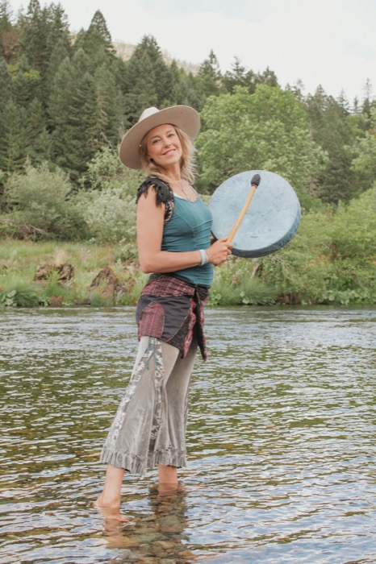

Couples Therapy
Stan Tatkin
The psychobiological approach to couple therapy - understanding how two nervous systems build (or break) secure, lasting attachment.
Relationship expert. Tantrika. Guide to powerful men and women for more than twenty years.
“I was a nanostructural engineer. I worked for DARPA. I was solving cold fusion. Then I had a spiritual awakening that changed the course of my life.” Maura helps those who have climbed to the top of society’s great mountain only to realize there is another mountain beckoning in the distance. She is the guide up this second mountain of soul.
Maura Grace is a relationship expert and tantrika who holds a Master’s degree in Transpersonal Counseling Psychology from Naropa University. She has spent over a decade in post-master’s training in couples therapy, trauma therapy, somatic therapy, and masculine/feminine studies.
Having trained with Stan Tatkin, David Deida, Peter Levine, and other brilliant minds, Maura has also studied indigenous wisdom and shamanic traditions with Martin Prechtel. She has spent over 20 years facilitating transformational work with powerful, high-caliber men and women.

Maura’s work lives at a rare intersection. From the clinical world she brings attachment neuroscience, trauma-informed somatic therapy, and the couples-therapy rigor of the Tatkin and Levine lineages. From the sacred traditions she brings the tantric arts of polarity, embodiment, and eros - taught with elegance, discretion, and deep respect.
The result is work that speaks to both your intellect and your body: precise enough for the skeptic, deep enough for the seeker. Nothing performative, nothing explicit, nothing off-the-shelf - simply the most direct path to the love you are capable of.
I heal the rift between the masculine and feminine.Maura Grace
Couples Therapy
The psychobiological approach to couple therapy - understanding how two nervous systems build (or break) secure, lasting attachment.
Masculine / Feminine Studies
The art of sexual polarity and intimate communion - how masculine and feminine energies create attraction, depth, and devotion.
Trauma & Somatics
Somatic Experiencing - releasing trauma held in the body so intimacy is met with openness instead of old defenses.
Alongside these teachers, Maura has studied indigenous wisdom and shamanic traditions with Martin Prechtel, grounding her modern clinical training in something far older: the understanding that love, beauty, and ritual are how humans have always made life sacred.
Whether you come alone or as a couple, it starts the same way: one honest conversation.